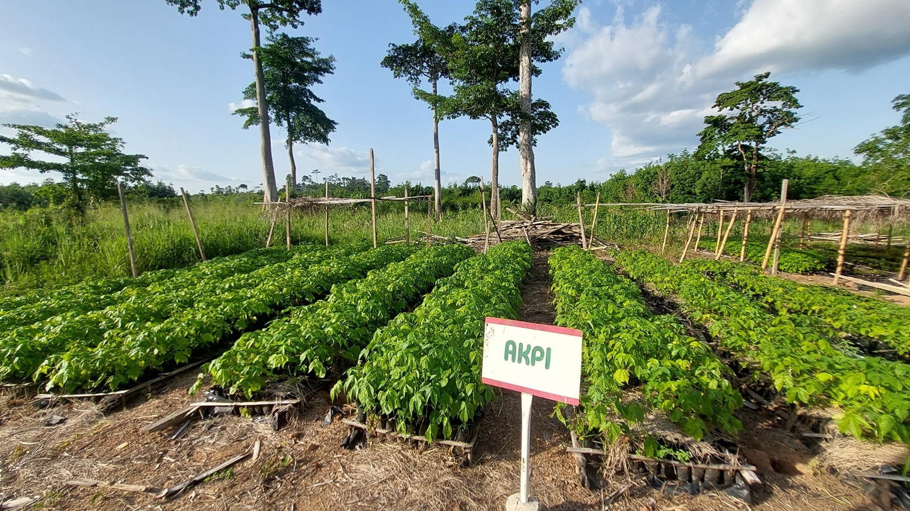
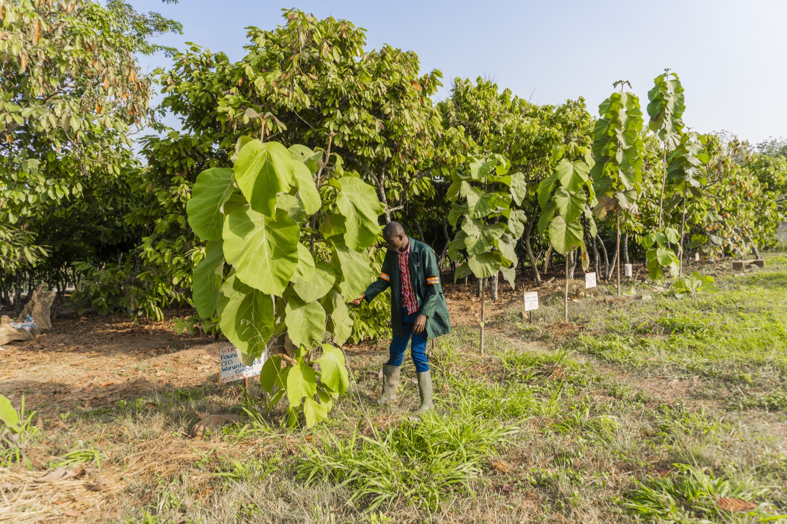
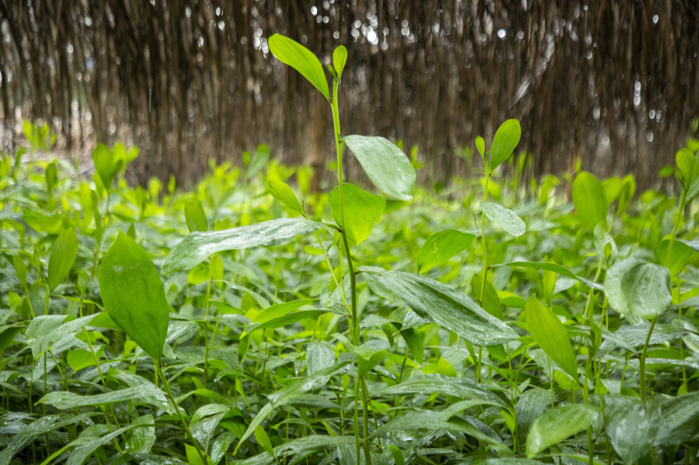

Restaurer les paysages, diversifier les cultures et protéger la biodiversité
Les vergers cacaoyers ont pris de l’âge. Pour éviter le recours systématique à de nouvelles superficies forestières et l'utilisation accrue d'intrants chimiques, nous devons agir. Ces pratiques menacent l'environnement et la biodiversité, et inquiètent nos partenaires chocolatiers.
Pour réduire ces impacts, ECAKOOG propose à ses exploitants agricoles une nouvelle approche plus adaptée : l'agroforesterie. Cette méthode permet de pratiquer une agriculture respectueuse des superficies disponibles et de la biodiversité.
Cette approche favorise le développement d’une nouvelle génération d’exploitants agricoles, contribue à la lutte contre le réchauffement climatique et permet la diversification des revenus des producteurs grâce aux arbres fruitiers et forestiers associés.
Nos Actions
- Plantation d'arbres d'ombrage
- Diversification des cultures (fruitiers, forestiers)
- Restauration des sols
- Création de forêts communautaires
- Protection de la biodiversité
- Sensibilisation et formation
Témoignage
"En luttant contre la déforestation dans notre chaîne d’approvisionnement de cacao, nous visons à réduire davantage notre empreinte carbone et à soutenir les producteurs de cacao pour qu’ils développent des exploitations plus adaptées au changement climatique. Nous participons déjà au programme Koognagnan cacao et nous projetons de créer des forêts communautaires autour de nos villages."

